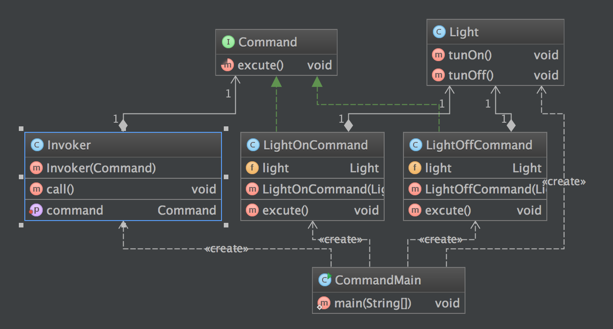

定义
将一个请求封装为一个对象，从而使我们可用不同的请求对客户进行参数化；对请求排队或者记录请求日志，以及支持可撤销的操作。命令模式是一种对象行为型模式，其别名为动作(Action)模式或事务(Transaction)模式。
使用场景
- 系统需要将请求调用者和请求接收者解耦，使得调用者和接收者不直接交互。
- 系统需要在不同的时间指定请求、将请求排队和执行请求。
- 系统需要支持命令的撤销(Undo)操作和恢复(Redo)操作。
- 系统需要将一组操作组合在一起，即支持宏命令
UML 图

AbstractFactory：抽象工厂
ConcreteFactory：具体工厂
AbstractProduct：抽象产品
Product：具体产品
简单实现
例子
public class Light {
public void tunOn() {
System.out.println("Light tun On");
}
public void tunOff() {
System.out.println("Light tun Off");
}
}
public interface Command {
void excute();
}
public class LightOffCommand implements Command {
private Light light;
public LightOffCommand(Light light) {
this.light = light;
}
@Override
public void excute() {
light.tunOff();
}
}
public class LightOnCommand implements Command {
private Light light;
public LightOnCommand(Light light) {
this.light = light;
}
@Override
public void excute() {
light.tunOn();
}
}
public class Invoker {
private Command command;
public Invoker(Command command) {
this.command = command;
}
public void setCommand(Command command) {
this.command = command;
}
public void call() {
command.excute();
}
}
客户端调用
public class CommandMain {
public static void main(String[] args) {
System.out.println("CommandMain RUNNING");
System.out.println("----");
Light light = new Light();
Command commandOn = new LightOnCommand(light);
Invoker invoker = new Invoker(commandOn);
invoker.call();
System.out.println("----");
Command commandOff = new LightOffCommand(light);
invoker.setCommand(commandOff);
invoker.call();
}
}
结果
CommandMain RUNNING
----
Light tun On
----
Light tun Off
类图

优缺点
- 优点
- 降低系统的耦合度。
- 新的命令可以很容易地加入到系统中。
- 可以比较容易地设计一个命令队列和宏命令（组合命令）。
- 可以方便地实现对请求的Undo和Redo。
- 缺点
- 使用命令模式可能会导致某些系统有过多的具体命令类。因为针对每一个命令都需要设计一个具体命令类，因此某些系统可能需要大量具体命令类，这将影响命令模式的使用。
## 总结
- 使用命令模式可能会导致某些系统有过多的具体命令类。因为针对每一个命令都需要设计一个具体命令类，因此某些系统可能需要大量具体命令类，这将影响命令模式的使用。
- 命令模式包含四个角色：抽象命令类中声明了用于执行请求的execute()等方法，通过这些方法可以调用请求接收者的相关操作；具体命令类是抽象命令类的子类，实现了在抽象命令类中声明的方法，它对应具体的接收者对象，将接收者对象的动作绑定其中；调用者即请求的发送者，又称为请求者，它通过命令对象来执行请求；接收者执行与请求相关的操作，它具体实现对请求的业务处理。
- 命令模式的本质是对命令进行封装，将发出命令的责任和执行命令的责任分割开。命令模式使请求本身成为一个对象，这个对象和其他对象一样可以被存储和传递。
- 命令模式的主要优点在于降低系统的耦合度，增加新的命令很方便，而且可以比较容易地设计一个命令队列和宏命令，并方便地实现对请求的撤销和恢复；其主要缺点在于可能会导致某些系统有过多的具体命令类。
- 命令模式适用情况包括：需要将请求调用者和请求接收者解耦，使得调用者和接收者不直接交互；需要在不同的时间指定请求、将请求排队和执行请求；需要支持命令的撤销操作和恢复操作，需要将一组操作组合在一起，即支持宏命令。
参考
https://sourcemaking.com/design_patterns/command
http://design-patterns.readthedocs.org/zh_CN/latest/creational_patterns/abstract_factory.html
『head first 设计模式』